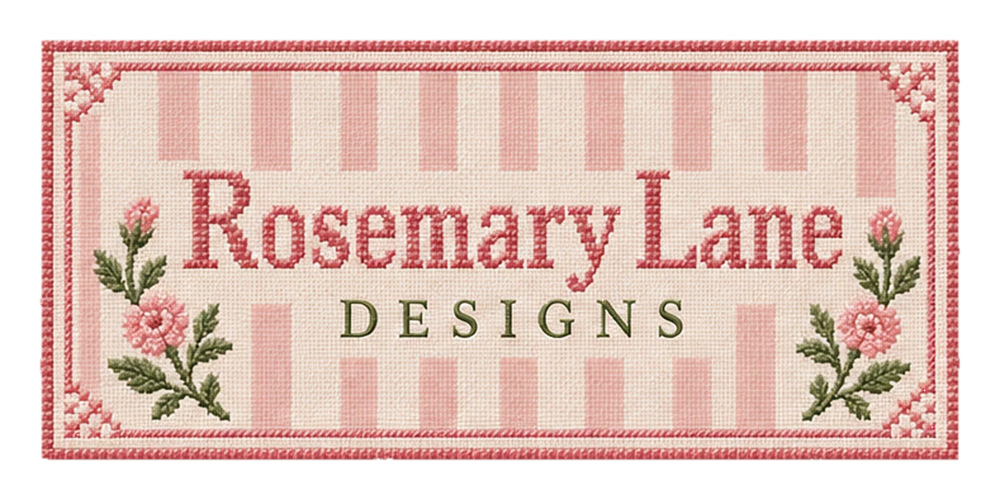
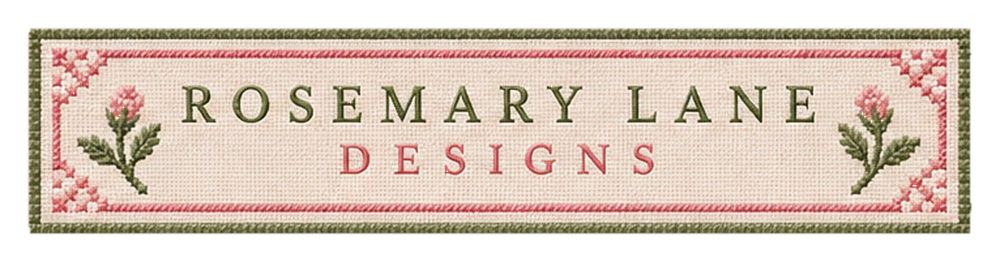
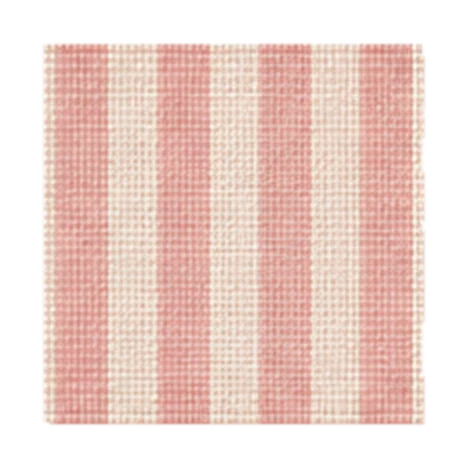

BRAND MARK · 01
The signature sampler
Our striped stitched wordmark, best on warm ivory.
Download transparent asset ↗ ROSEMARY LANE DESIGNSBACK TO THE ATELIER ↗
ROSEMARY LANE DESIGNSBACK TO THE ATELIER ↗A carefully edited collection of needlepoint motifs, monograms, and finishing touches. Each asset has been individually cleaned, given breathing room, and prepared on a transparent background.

Muted blush · soft sage · ivory thread

Our striped stitched wordmark, best on warm ivory.
Download transparent asset ↗A traditional needlepoint crest for quiet brand moments.
Download transparent asset ↗
A fine embroidered label inspired by antique stationery.
Download transparent asset ↗
A delicate divider for the beginning or end of a section.
Download transparent asset ↗
A tiny keepsake-style needlepoint floral patch.
Download transparent asset ↗
A subtle woven accent in powder pink and ivory.
Download transparent asset ↗
A softly colored bouquet with embroidered ribbon.
Download transparent asset ↗A horizontal botanical flourish for understated details.
Download transparent asset ↗
A small round floral ornament for invitations and notes.
Download transparent asset ↗These stitched illustrations are decorative brand assets. For the most polished presentation, pair them with open space, ivory paper tones, and a single focal piece at a time.
ENQUIRE ABOUT ROSEMARY LANE ↗